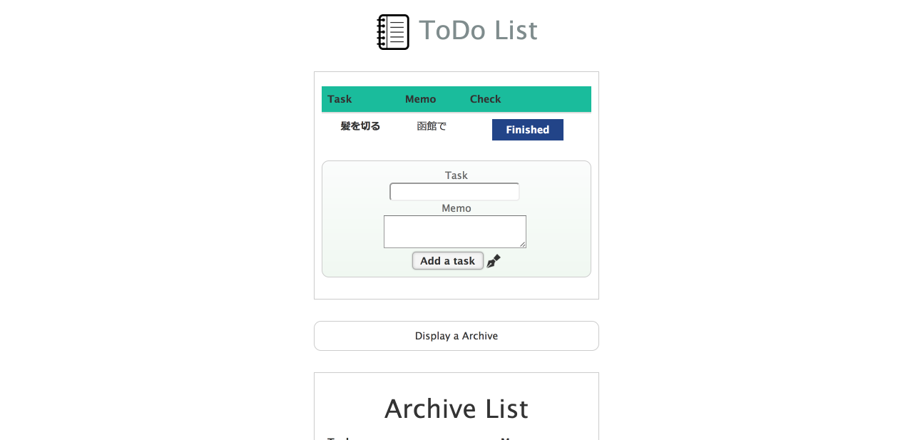

インターンで制作したtodo管理アプリ
TODO管理アプリ

機能 : やらなくちゃいけないことをメモできるアプリです。完了したtodoはアーカイブとして保存され、後からいつでも見返すことが可能です。
背景 : 2016年度夏に参加したダイヤモンドヘッド株式会社のインターンシップで制作したアプリになります。この時初めてPHPに触れることができました。また、DBのテーブル設計なども初めて自分一人で行いました。最初はMySQLで開発を進めてましたが、Herokuへのアップロードが最終目標だったので、途中からPostgreSQLに変更する作業がとても大変でした(herokuはクレジットカード情報を登録しないとMySQLが使えない)。
使用言語、環境 : PHP,MySQL,PostgreSQL,phpMyadmin,HTML,CSS,Heroku
URL : herokuリンク
BACK